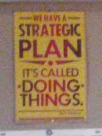

Hello! I am Zach Gotsch, and I have been in a funk recently. I was thinking in the shower (a place where I do a lot of my best thinking, too bad it's so hard to write things down in there...) and I think I've figured out why. I've noticed a recent trend ‒ I have been consuming WAY more stuff than I have been creating. One of my core beliefs about people is that the act of creation, simply making things, is one of our core needs ‒ I don't think a person can be truly happy without it. I work on a lot of little projects, but I'm the kind of person who never seems to finish things. Something that's incredibly inspiring to me one day can be tiresome and arduous the next week. My consistent lack of follow-through is really starting to wear on me. I want to look back on things I've created with pride, rather than wondering what might have been if I had been more diligent. I think this is why I've been rather miserable lately, but I have a plan. It's called making things.
I've had a similar phrase stuck in my head for a few months, ever since I saw a picture of it in the Exploratorium in San Francisco. (Sorry this looks like it was taken with a potato.)
(Quick side note: if you've never been to the Exploratorium before and you ever get the chance, I highly recommend it! It's a hands-on science museum with some amazing exhibits. You should check out their website.)
The poster immediately think of one of my friends: Brandon Curtis. The poster reminds me of Brandon because he's constantly doing things. He builds things (like Lord Kelvin's Thunderstorm), learns things (like what's actually happening when food ferments), and just does things like nobody else I know. He's an inspiration for me, and I always find myself making and doing things so much more successfully when I am hanging out with him. (You should totally check out his blog And Higher Still.)
I think my amazing productivity when I'm hanging out with Brandon gives a hint at how I can fix my productivity: a little social pressure. So here's the plan: I am going to post once a day on this blog with something I've made or something I've been working on making. With any luck, not wanting to disappoint you will keep me making and you'll be interested in the stuff I'm churning out. I have a plan: It's called making things.
P.S. Today I made this blog post and the site. I know it's just static html right now, but I'm working on it :)